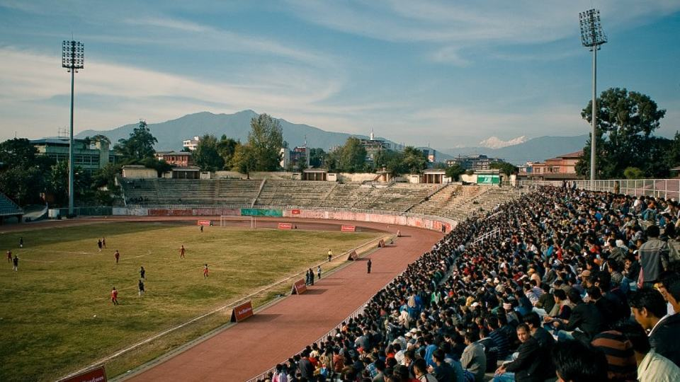

Belçika–Türkiye 3-0: De Bruyne iki, Lukaku bir gol attı

Görsel: Dasarath Rangasala Stadium · Piterpan · CC BY 2.0 · Wikimedia Commons
A Milli Takım, UEFA Uluslar Ligi A Ligi 1. Grup'taki üçüncü maçında Belçika deplasmanından 3-0 yenilgiyle döndü. Kevin De Bruyne iki, Romelu Lukaku bir gol attı. Türkiye üç maç sonunda hâlâ puansız ve grubun son sırasında duruyor.
Belçika–Türkiye maçı kaç kaç bitti, golleri kim attı?
Maç Belçika'nın 3-0 üstünlüğüyle tamamlandı. De Bruyne 10. dakikada skoru açtı, aynı oyuncu 59. dakikada farkı ikiye çıkardı. Lukaku 76. dakikada üçüncü golü kaydetti. Türkiye 90 dakika boyunca gol bulamadı ve maçı ilk yarıda yediği golün ardından hiç öne geçemeden kapattı.
Karşılaşma Liege'deki Stade Maurice Dufrasne'de oynandı, maçı Norveçli hakem Rohit Saggi yönetti. Türkiye'de yayın ATV ekranlarından şifresiz yapıldı; maçın şifresiz olması, karşılaşmayı yayın günü en çok aranan başlıklardan biri hâline getirmişti.
Vincenzo Montella'nın sahaya sürdüğü ilk 11 şöyleydi: Uğurcan, Zeki, Merih, Abdülkerim, Oğuz, İsmail, Bartuğ, Ferdi, Arda, Kerem, Barış Alper.
Belçika–Türkiye maçı neden bu kadar arandı?
Grup, Avrupa'nın en zorlu kümelerinden biri. Fransa, İtalya ve Belçika aynı torbada; dördü de son yıllarda büyük turnuvalarda üst turları gören takımlar. Böyle bir grupta her maç, hem puan hem de kümede kalma açısından ayrı ayrı okunuyor.
Türkiye ilk iki maçında Fransa'ya 1-0, İtalya'ya 4-1 yenilmişti. Belçika deplasmanı, gruptaki ilk puanın alınabileceği karşılaşma olarak görülüyordu; beklenti bu yüzden yüksekti ve maç öncesi arama hacmi de buna paralel yükseldi.
Üç maçın toplamına bakıldığında tablo daha net görünüyor: Türkiye sekiz gol yedi, bir gol attı. Bu seri, maç sonrası aramaların skordan çok grup durumuna ve küme düşme ihtimaline kaymasına yol açtı.
Belçika–Türkiye sonrası grupta bilinenler ve henüz bilinmeyenler
Grup tablosunda Fransa 7 puanla önde. Belçika 6 puanla ikinci, İtalya 4 puanla üçüncü sırada. Türkiye üç maçta puan alamadan son sırada bulunuyor ve averaj olarak da tablonun en altında.
Her takım grupta altı maç oynuyor, yani üç maç daha var. Hesap matematiksel olarak kapanmış değil; ancak ilk üç maçın tamamının kaybedilmesi Türkiye'yi küme düşme hattına belirgin biçimde yaklaştırdı. Kalan maçların ikisi deplasmanda oynanacak.
Kümede kalma ya da alt lige düşme kesinleşmiş değil. Sonuç, kalan üç maçın yanı sıra diğer grupların averaj tablosuna da bağlı. Bu yüzden şu aşamada açıklanabilir kesin bir küme sonucu bulunmuyor; Uluslar Ligi'nde karar genellikle son hafta netleşiyor.
Belçika–Türkiye'den sonra sırada ne var?
Türkiye 5 Ekim'de İtalya deplasmanına gidiyor. Aynı hafta Belçika, Fransa'ya konuk olacak. İki maç da grubun yönünü doğrudan etkileyecek; Fransa ile Belçika arasındaki sonuç, zirve yarışını da belirleyecek.
Kasım ayındaki son iki hafta tabloyu kapatıyor. 12 Kasım'da Türkiye evinde Belçika'yı ağırlıyor, 15 Kasım'da Fransa deplasmanına gidiyor. İlk puanın alınabileceği en gerçekçi maç olarak kasımdaki iç saha karşılaşması gösteriliyor.
Kadro ve yayın bilgileri genellikle maç haftasında açıklanıyor. İtalya maçının yayın kanalı ve saati henüz duyurulmadı.
“Milliler, bu sonuçla birlikte 0 puanda kalırken Belçika'nın puanı 6'ya yükseldi.”
— Hürriyet, 3 Ekim 2026
Takip etmek için
- UEFA'nın resmî Uluslar Ligi sayfasındaki A Ligi 1. Grup tablosu — puan ve averaj maç bitiminde güncelleniyor
- Türkiye Futbol Federasyonu'nun A Milli Takım sayfası — kadro, maç programı ve saat duyuruları buradan çıkıyor
- ATV'nin yayın akışı — 5 Ekim'deki İtalya maçının kanalı ve saati açıklandığında orada görünür
Sık sorulan sorular
Belçika–Türkiye maçı kaç kaç bitti?
Belçika 3-0 kazandı. De Bruyne 10 ve 59. dakikalarda, Lukaku ise 76. dakikada gol attı. Türkiye maç boyunca gol bulamadı.
Türkiye grupta kaçıncı sırada?
Son sırada. Üç maçta hiç puan alamadı. Tablonun üstünde Fransa 7 puanla birinci, Belçika 6 puanla ikinci, İtalya 4 puanla üçüncü sırada yer alıyor.
Türkiye'nin sıradaki maçı ne zaman?
5 Ekim'de İtalya deplasmanında oynanacak. Ardından 12 Kasım'da evinde Belçika, 15 Kasım'da da Fransa deplasmanı var. Yayın bilgisi maç haftasında açıklanıyor.
Olgular şu yayıncıların haberlerinden derlendi: Hürriyet, Haber Gazetesi, CNN Türk, Fanatik. Metnin tamamı TrendSaphiens tarafından yazıldı; kaynaklarla kelime örtüşmesi %0.0 (eşik %5). Kaynaklarda olmayan bilgi eklenmedi.